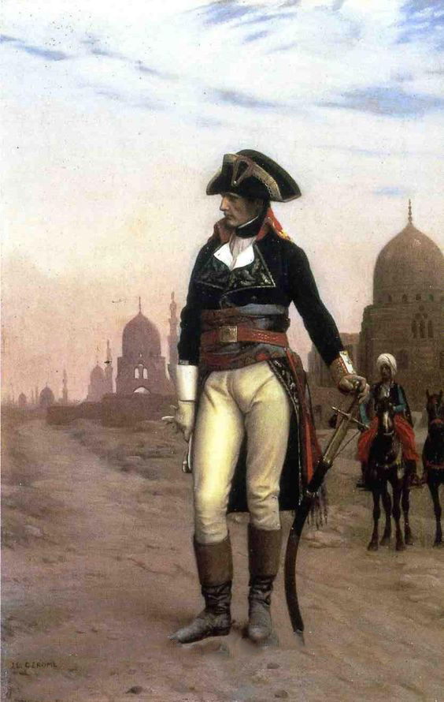
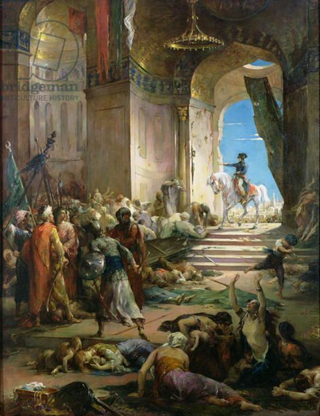
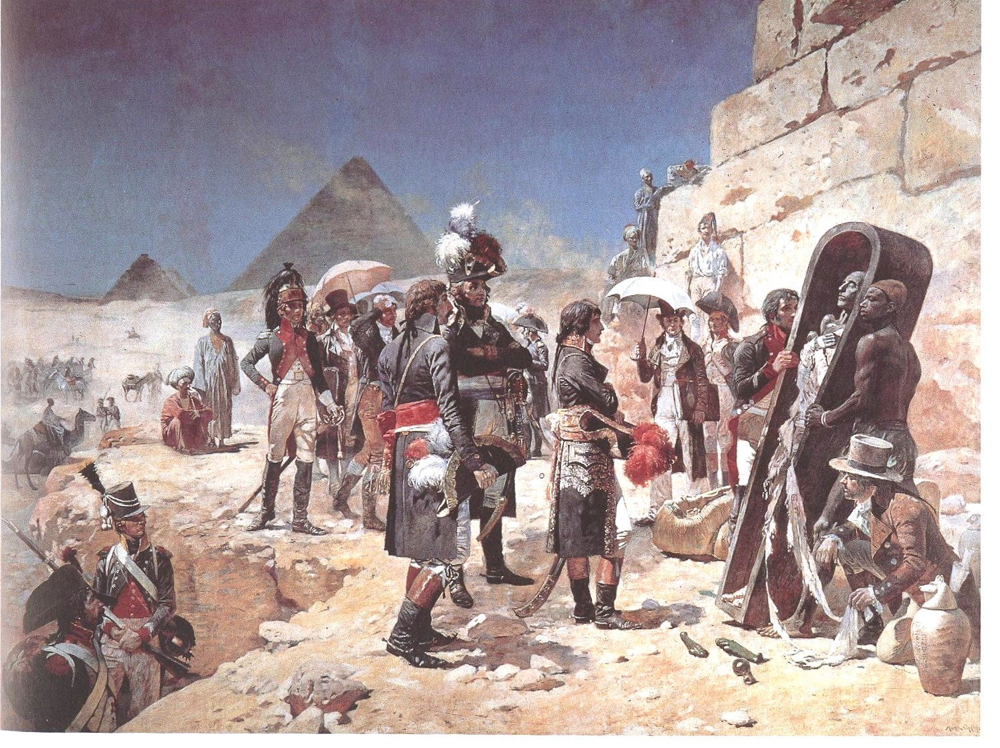

Trong sự nghiệp lịch sử của Napoléon, cuộc viễn chinh Ai Cập - cuộc chiến tranh lớn thứ hai của ông ta - giữ một vai trò đặc biệt, và trong lịch sử xâm chiếm thuộc địa của Pháp, mưu đồ đó cũng chiếm một địa vị hoàn toàn đặc biệt.
Giai cấp tư sản ở Marseille và ở khắp miền Nam nước Pháp có những quan hệ rất rộng rãi và rất có lợi lộc cho nền thương mại và kỹ nghệ Pháp với các nước ở vùng Cận Đông, nói một cách khác, với các hải cảng của bản đảo Balkan, với nước Syria, Ai Cập, với các đảo ở phía Đông Địa Trung Hải và Aspern. Cũng đã từ lâu, các tầng lớp tư sản Pháp nói trên mong mỏi nước Pháp củng cố được địa vị chính trị ở các nước có nhiều nguồn lợi đó, nhưng lại rất lộn xộn về tổ chức chính sự; cho nên việc buôn bán ở đó thường xuyên cần đến sự bảo hộ và uy thế của quân đội. Vào cuối thế kỷ thứ XVIII, những tài nguyên giàu có của Syria và Ai Cập đã được rất nhiều người miêu tả một cách quyến rũ; nếu biến những nơi đó thành thuộc địa và lập ở đó những đại lý thương mại thì sẽ thu được những nguồn lợi to lớn.
Những nhà ngoại giao Pháp từ lâu đã nhòm ngó các nước Cận Đông ấy. Những nước ấy là một bộ phận đất đai của Hoàng Đế Constantinople và nằm trong lãnh thổ của triều đình Ottoman, nhưng sự tổ chức bảo vệ những đất đai ấy của Thổ Nhĩ Kỳ hình như quá yếu ớt. Đã từ lâu, trong các giới cầm quyền Pháp, người ta nhìn xứ Ai Cập, với địa thế nằm giữa Địa Trung Hải và Hồng Hải, như một căn cứ mà từ đó có thể uy hiếp được các đối thủ về kinh tế và chính trị ở Ấn Độ và Indonesia. Trong thời của mình, nhà triết học nổi tiếng Leibniz đã đệ lên vua Louis thứ XIV một bản tâu trình, trong đó Leibniz khuyên nên chiếm Ai Cập để có thể phá được vị trí của người Hà Lan ở khắp Phương Đông. Vào cuối thế kỷ XVIII, không phải người Hà Lan là kẻ thù chính của nước Pháp nữa mà là người Anh; do tất cả những điều vừa nói trên đây nên những nhà chính trị Pháp không hề coi Bonaparte là một người điên khi ông ta đề nghị đánh Ai Cập và họ cũng không hề lấy làm ngạc nhiên khi thấy Talleyrand, Bộ Trưởng Bộ Ngoại Giao của họ, một người vốn lạnh lùng, thận trọng, dè dặt và hoài nghi lại đã ủng hộ kế hoạch đó một cách kiên quyết nhất.
Vừa mới làm chủ Venezia, Bonaparte đã ra lệnh cho một trong những tướng lĩnh của mình đánh chiếm lấy các đảo Ionian, Bonaparte nói rằng việc chiếm lấy các đảo ấy là một kế hoạch phụ trợ để chuẩn bị cho kế hoạch đánh chiếm Ai Cập. Chúng tôi có nhiều chứng cớ cụ thể cho phép khẳng định rằng trong suốt chiến dịch nước Ý lần thứ nhất, Bonaparte đã luôn luôn nghĩ đến Ai Cập. Tháng 8 năm 1797, từ bản doanh chiến dịch, Bonaparte viết về cho Paris: “Chẳng mấy nữa mà chúng ta sẽ nhận thấy rằng muốn thực sự tiêu diệt được nước Anh tất phải đánh chiếm Ai Cập”. Trong suốt thời gian chiến tranh ở Ý, lúc rỗi, Bonaparte vẫn tiếp tục ngốn ngấu đọc sách như thường lệ, nhất là cho tìm và đọc sách của Volney viết về Ai Cập, cũng như rất nhiều tác phẩm khác nói về vấn đề ấy. Bonaparte tha thiết với việc chinh phục các đảo Ionian đến mức đã viết về cho Viện Đốc Chính rằng nếu phải lựa chọn thì thà từ bỏ nước Ý còn hơn là từ bỏ các đảo đó. Đồng thời, ngay trước khi ký xong hòa ước với người Áo, Bonaparte đã cố tình khuyên nên đánh chiếm đảo Malta. Đối với Bonaparte, tất cả những căn cứ hải đảo ở Địa Trung Hải đều cần thiết để tổ chức cuộc tiến công sang Ai Cập sau này.
Sau Hòa Ước Campo Formio, khi đã tạm thời giải quyết xong với nước Áo thì nước Anh là kẻ thù chính. Bonaparte đã cố hết sức thuyết phục Viện Đốc Chính cấp cho ông ta một hạm đội và một đạo quân để đi chinh phục Ai Cập. Phương Đông luôn luôn hấp dẫn Bonaparte. Và vào thời kỳ này của đời mình, tâm trí Bonaparte bị Alexander Đại đế xâm chiếm nhiều hơn là Caesar hay Charlemagne hoặc bất cứ vị anh hùng nào khác của lịch sử.
Sau đó ít lâu, trên sa mạc ở Ai Cập, với giọng nửa đùa cợt, Bonaparte nói với các chiến hữu của ông ta rằng đáng tiếc là mình “đã ra đời quá muộn” và đã không được sống và thời kỳ mà “Alexander sau khi chinh phục được Châu Á, đã tự xưng với nhân dân là con Trời và được tất cả phương Đông tin như vậy”. Rồi Bonaparte nghiêm trang nói tiếp: “Châu Âu là một cái hang chuột, chưa bao giờ ở Châu Âu có những đế quốc vĩ đại và những cuộc cách mạng vĩ đại như ở phương Đông”.
Những xu hướng thầm kín đó của Bonaparte hoàn toàn phù hợp với yêu cầu của thời bấy giờ và với lợi ích sự nghiệp của Bonaparte. Thực tế là từ cái đêm không ngủ ấy ở nước Ý, Bonaparte đã quyết định không muốn chỉ chiến thắng duy nhất vì Viện Đốc Chính nữa, mà Bonaparte nhằm đạt đến quyền lực tối cao. “Tôi không biết phục tùng nữa rồi”. Trong thời gian đàm phán hòa bình với Áo, Bonaparte đã công khai tuyên bố như vậy ở tổng hành dinh của mình khi nhận được những chỉ thị từ Paris gửi tới làm ông ta bực mình. Nhưng lật đổ Viện Đốc Chính ngay lúc bấy giờ thì chưa thể làm được. Tình hình chưa chín muồi, và nếu Napoléon đã không biết phục tùng nữa thì ông ta cũng còn biết chờ thời cơ thuận lợi.
Viện Đốc Chính chưa mất hết tín nhiệm và Bonaparte còn chưa đủ trở thành đứa con cưng và thần tượng của toàn thể quân đội, mặc dầu Bonaparte đã có thể hoàn toàn tin cậy vào những sư đoàn mà ông ta đã chỉ huy ở Ý. Nhưng sử dụng thế nào cho tốt thời gian chờ đợi, còn cách nào hơn là dùng nó vào những cuộc chinh phục mới, những chiến công mới, rực rỡ trên đất nước của các vị Pharaon, trên xứ sở của Kim tự tháp theo tấm gương của Alexander Đại đế, và đe dọa nước Anh đáng ghét kia trên đất Ấn Độ của họ.
Trong trường hợp này, sự giúp đỡ của Talleyrand đối với Bonaparte thật vô cùng cần thiết. Trong hàng loạt vấn đề ấy, Talleyrand “không tin tưởng sắt đá” lắm, nhưng Talleyrand thấy rõ ràng là có khả năng thành lập ở Ai Cập một thuộc địa Pháp giàu có và phồn vinh, có lợi về mặt kinh tế, Talleyrand đã báo cáo vấn đề này lên Viện Hàn lâm khoa học, ngay cả trước khi biết ý đồ Bonaparte. Kẻ quý tộc cơ hội chủ nghĩa chui vào chính phủ Cộng Hòa ấy chẳng qua cũng chỉ là nhân cơ hội đó mà phát biểu những nguyện vọng của cái giai cấp quan tâm đặc biệt đến việc buôn bán với vùng Cận Đông, là những thương gia Pháp.
Thêm vào đó là Talleyrand mong được Bonaparte, nhìn y bằng con mắt thiện cảm, vì nhìn vào Bonaparte, con mắt tinh đời của nhà ngoại giao ấy đã đoán trước được đó sẽ là người chủ tương lai của nước Pháp và là người nhất định sẽ bóp chết được phái Jacobin.
Nhưng Bonaparte và Talleyrand đã không phải khó khăn nhiều để thuyết phục Viện Đốc Chính cho binh lính, tiền bạc, tàu bè dùng vào cuộc xâm chiếm xa xôi và nguy hiểm đó.
Trước hết (và lại là điều quan trọng hơn cả), vì những lý do chung về kinh tế và những lý do riêng về chính trị và quân sự, Viện Đốc Chính cũng đã nhìn thấy lợi ích và ý nghĩa của cuộc xâm chiếm này, và sau nữa (điều này chẳng quan trọng gì) vì một vài người trong số các vị đốc chính, như Barras chẳng hạn, thật ra có thể cho rằng cuộc viễn chinh xa xôi và nguy hiểm ấy có cái lợi chính vì nó xa xôi và nguy hiểm... Việc Bonaparte đột nhiên nổi danh vang lừng đã làm cho họ lo lắng từ lâu; Viện Đốc Chính rõ hơn ai hết việc Bonaparte “không biết phục tùng nữa”. Napoléon chẳng đã ký Hòa Ước Campo Formio theo ý riêng của ông ta, không đếm xỉa đến một số ý kiến mà Viện Đốc Chính đã phát biểu rõ ràng đó sao? Trong buổi đón tiếp long trọng Napoléon ngày 10 tháng 12 năm 1797, ông đã không xử sự như một “chiến sĩ” trẻ tuổi tiếp nhận những lời khen ngợi của tổ quốc với một tấm lòng cảm động và biết ơn, mà lại làm như một vị Hoàng Đế La Mã được cái Thượng Nghị Viện tôi tớ nghênh đón trong cuộc lễ khải hoàn tổ chức sau một trận chiến thắng: thái độ lầm lì, lạnh lùng gần như cau có, ông ta đã nhận tất cả những vinh dự ấy như một việc tất nhiên phải thế và nghĩa vụ buộc phải thế đối với ông ta.
Tóm lại, tất cả những cử chỉ, thái độ của Napoléon làm người ta phải nghĩ ngợi lo âu.
Vậy thì cứ để Bonaparte đi Ai Cập, nếu trở về được thì tốt, bằng không, Barras và mấy đồng sự của ông ta đành sẵn sàng chịu đựng cái tổn thất ấy vậy. Ngày 5 tháng 3 năm 1798, cuộc viễn chinh được quyết định và Bonaparte được cử làm tổng chỉ huy.
Với một tinh thần khẩn trương gấp rút, Bonaparte tức khắc bắt tay vào việc chuẩn bị chuyến đi, kiểm tra tàu bè, lựa chọn binh lính. Tài năng của Napoléon đã biểu hiện rõ hơn cả thời kỳ đầu của cuộc viễn chinh sang Ý. Napoléon tiến hành những công việc rất to lớn và rất khó khăn, đồng thời cũng chú ý đến cả những chi tiết nhỏ nhặt nhưng không bao giờ chìm ngập vào đó, ông vừa nhìn cả cây vừa nhìn cả rừng, hay có thể nói từng cái cành trong từng cái cây một. Vừa kiểm tra bờ biển và hạm đội, vừa thành lập đoàn quân viễn chinh vừa chăm chú theo dõi tình hình diễn biến chính trị trên thế giới và tất cả những tin tức nói về hoạt động của hạm đội Nelson là hạm đội có thể đánh đắm hạm đội Pháp trong khi đi ngang qua, và trong khi chờ đợi, hạm đội ấy đang đi đi lại lại nhìn ngó vào bờ biển nước Pháp. Bonaparte lựa chọn rất cẩn thận trong số những binh lính đã chiến đấu dưới quyền mình ở Ý. Ông biết tường tận cá nhân của rất nhiều binh sĩ. Về sau này, trí nhớ khác thường của Bonaparte luôn luôn làm cho những người xung quanh hết sức ngạc nhiên.
Ông biết rõ anh lính này chiến đấu dũng cảm và kiên quyết, nhưng lại hay uống rượu, anh lính kia thì thông minh và tháo vát nhưng lại chóng mệt vì mắc bệnh sa đì. Về sau này, mỗi khi cần đến, Bonaparte đã biết lựa chọn đúng và tốt từ tướng soái cho đến các hạ sĩ quan và những người lính thường. Để đi viễn chinh ở Ai Cập, để làm chiến tranh dưới trời nắng như thiêu đốt, 50 độ hay cao hơn, để vượt qua sa mạc mênh mông, cát nóng bỏng không nước và không bóng mát, cần có những binh lính dẻo dai chịu đựng được mọi gian khổ.
Ngày 19 tháng 5 năm 1798, công việc chuẩn bị đã xong xuôi, hạm đội Bonaparte rời khỏi Toulon. 350 chiếc tàu lớn nhỏ và một đoàn thuyền, trên chở một đạo quân 30.000 người cùng với pháo binh, phải vượt qua gần hết Địa Trung Hải, vừa phải tránh hạm đội Nelson, cái hạm đội tất sẽ bắn phá và đánh chìm được hạm đội của Bonaparte nếu gặp nhau.
Toàn Châu Âu biết rằng có một cuộc viễn chinh bằng đường biển đang được chuẩn bị. Nước Anh biết rõ là tại khắp các hải cảng miền Nam nước Pháp người ta đang hoạt động dữ dội, quân đội không ngớt cuồn cuộn kéo đến và tướng Bonaparte là người đứng đầu cuộc viễn chinh, điều đó chứng tỏ tầm quan trọng của nó. Nhưng nó sẽ nhằm cái đích nào đây? Bonaparte đã rất khéo léo phao tin là ông ta có ý định vượt qua eo biển Gibraltar, đi vòng qua Tây Ban Nha để đổ bộ lên Ireland. Tin này bay đến tai Nelson và đã đánh lừa được Nelson.
Nelson phục kích Napoléon ở những vùng lân cận Gibraltar, trong khi đó hạm đội Pháp, rời khỏi hải cảng, tiến thẳng về phía Đông, đến đảo Malta. Từ thế kỷ thứ XVI, đảo Malta thuộc “Dòng Họ Kỵ Sĩ”. Khi vừa cập bến, tướng Bonaparte buộc đảo này phải đầu hàng; đảo đã quy phục và Bonaparte tuyên bố đó là đất thuộc nước Cộng Hòa Pháp. Sau vài ngày đậu lại đảo, chiến thuyền của Bonaparte lại giương buồm đi về phía Ai Cập. Tính đến Malta là đã được gần nửa đường; Bonaparte tới Malta ngày 10 tháng 6 và rời đi ngày 19.
Được thuận gió, Bonaparte cùng đại quân cập bến Ai Cập ở gần Alexandria ngày 30 tháng 6; Bonaparte lập tức đổ bộ.
Tình thế lúc đó thật nguy hiểm: Vừa đến Alexandria thì Bonaparte được tin trước đó đúng 48 giờ, một hạm đội Anh đã cập bến này và hỏi tin tức về Bonaparte (dĩ nhiên người ta không biết gì hết). Về phía Nelson, sau khi hay tin quân Pháp đã lấy được Malta và biết ra rằng mình bị Bonaparte đánh lừa, ông ta liền gấp rút tiến về phía Ai Cập để ngăn chặn quân Pháp đổ bộ và để đánh chìm họ ngay ngoài biển. Nhưng sự hấp tấp của Nelson và cuộc hành quân quá nhanh của hạm đội Anh đã phản lại Nelson, vì sau khi biết đích xác là Bonaparte đã rời Malta đi Ai Cập, rồi khi đến Alexandria chẳng hề nghe thấy nói về Bonaparte, Nelson bèn quyết đoán nếu quân Pháp không có ở Ai Cập thì chỉ có thể là họ đi Constantinople không còn hướng nào khác nữa. Nelson lại gấp rút đi về phía Constantinople và thế là ông ta lại lầm lẫn lần nữa.
Một loạt những sự tình cờ và lầm lẫn ấy của Nelson đã cứu thoát đội quân viễn chinh Pháp. Vì bất cứ lúc nào Nelson cũng có thể quay lại được nên cuộc đổ bộ của Bonaparte đã được tiến hành một cách khẩn trương nhất, và đêm ngày 2 tháng 7, quân đội Pháp đã ở trên đất liền.
Được trở lại với môi trường của mình là đất liền, cùng với những binh lính trung thành, Bonaparte không còn sợ gì nữa. Ông lập tức tiến quân về Alexandria (Bonaparte đã đổ bộ lên Maratbu, một làng dân chài, cách thành phố vài km).
Ai Cập được coi là một thuộc quốc của triều đình Thổ, nhưng quyền hành ở đó thực tế thuộc về bọn sĩ quan cao cấp Mamelukes[19], một đội kỵ binh được trang bị rất đầy đủ và cấp chỉ huy của họ chiếm cứ những đất đai màu mỡ ở Ai Cập. Giới quý tộc phong kiến quân phiệt ấy phải triều cống cho vua Thổ Nhĩ Kỳ ở Constantinople và tuy công nhận quyền lực tối cao của vua Thổ, nhưng thực tế rất ít phục tùng vua Thổ.
Người Ả Rập, thành phần dân tộc cơ bản của xứ này, hoặc buôn bán (trong số đó có những thương gia khá giả và cũng có người giàu có), hoặc làm nghề thủ công, hoặc vận chuyển bằng lạc đà, hoặc làm nghề nông. Dân tộc Koptos, tàn tích của những bộ lạc cũ trước khi có cuộc xâm chiếm của người Ả Rập, là những người bị áp bức và cực khổ nhất. Người ta thường gọi là “fellas” (dân cày). Nhưng đối với những dân cày nguồn gốc Ả Rập, lâm vào những cảnh túng cùng cực khổ, người ta cũng gọi như vậy. Họ là những công nhân nông nghiệp, những người làm mướn, những người chăn dắt lạc đà và một số buôn bán vặt ở các chợ.
Mặc dầu nước đó được coi là thuộc vua Thổ, nhưng khi tới xâm chiếm, Bonaparte đã không ngừng tuyên bố rằng không muốn chiến tranh với vua Thổ - người mà Bonaparte muốn chung sống trong hòa bình và hữu nghị bền vững nhất - Bonaparte đến đây chỉ để giải phóng cho người Ả Rập (ông ta không nói đến người Koptos) khỏi ách áp chế của bọn Mamelukes là bọn đã bóc lột và hành hạ dân chúng quá tàn bạo. Và khi Bonaparte tiến về phía Alexandria, hạ được thành sau một trận chiến đấu nhỏ trong vài giờ, và khi đã vào được cái thành phố rộng lớn và khá trù phú đó vào thời kỳ bấy giờ thì Bonaparte đã vừa bám lấy luận điệu tuyên truyền ấy, vừa nhắc đi nhắc lại rằng mình đến đây chỉ để tiêu diệt cái ách của bọn Mamelukes, và đặt ngay nền thống trị của Pháp ở xứ ấy. Bằng đủ mọi giọng lưỡi, ông ta bảo đảm với người Ả Rập là tôn trọng Đạo Hồi và kinh thánh của họ, nhưng khuyên nhủ họ phải quy phục hoàn toàn và đe dọa sẽ dùng đến những biện pháp nghiêm khắc.

.Sau vài ngày ở Alexandria, Bonaparte tiến về phía Nam và đi sâu vào sa mạc. Quân đội bị thiếu nước, dân cư các làng hoảng hốt rời bỏ nhà cửa và khi chạy trốn đã đầu độc và làm bẩn các giếng nước. Quân Mamelukes vừa đánh vừa rút lui từ từ, thỉnh thoảng lại quấy quân Pháp, rồi lẩn trốn mất trên lưng những con ngựa quý của họ.
Ngày 20 tháng 7 năm 1798, khi nhìn thấy Kim tự tháp, Bonaparte cuối cùng đã gặp chủ lực quân Mamelukes. Trước khi khởi chiến, Napoléon đã nói với quân đội mình: “Hỡi các binh sĩ! Từ trên đỉnh cao của Kim tự tháp này, 4.000 năm lịch sử đang quan chiêm các người chiến thắng!”.
Cuộc chiến đấu đã diễn ra ở quãng giữa làng Embabeh và Kim tự tháp. Quân Mamelukes, hoàn toàn bị đánh bại, đã chạy trốn về phía Nam, bỏ lại một phần pháo binh (40 khẩu pháo). Mấy nghìn xác chết phủ kín chiến trường.
Ngay sau thắng lợi này, Napoléon tiến vào Cairo, thành phố thứ hai trong số các thành phố lớn của Ai Cập. Dân chúng sợ hãi lặng lẽ đón tiếp kẻ chiến thắng: Những người dân ấy không bao giờ nghe nói đến Bonaparte và ngay cả lúc đó cũng chẳng hề biết Bonaparte là ai, tại sao lại đến đây và đánh nhau với ai.
Ở Cairo trù phú hơn cả Alexandria, Bonaparte đã lấy được rất nhiều lương thực. Quân đội đã được nghỉ ngơi sau những chặng đường vất vả. Quả thật là Bonaparte đã bực mình khi thấy nhân dân quá sợ hãi, và trong một bản công bố đặc biệt, được dịch ra tiếng địa phương, tướng Bonaparte hô hào mọi người hãy yên tâm. Nhưng, cùng lúc ấy, Bonaparte lại hạ lệnh đi cướp phá và đốt làng Ancam, cách Cairo không xa, để trừng phạt vì bị nghi là đã ám sát vài tên lính Pháp, do đó dân Ả Rập chỉ càng sợ hãi thêm.

.Trong những trường hợp như vậy, không bao giờ Napoléon do dự khi hạ lệnh, dù là ở Ý, ở Ai Cập hay ở bất kỳ nơi nào mà sau này Napoléon tiến hành chiến tranh, và cái đường lối chính trị đó đã được ông ta tính toán rất kỹ: Phải làm cho quân lính thấy được rằng người chỉ huy của họ đã thi hành những hình phạt kinh khủng thế nào với bất kỳ kẻ nào dám đụng đến một người Pháp.
Khi đã đặt chân đến đất Cairo, Napoléon liền tổ chức việc cai trị ở đấy. Tôi sẽ không kể những chi tiết không cần thiết, chỉ xin nói đến những nét đặc biệt nhất của chế độ Napoléon:
— Trước hết, quyền hành trong mỗi thành phố, trong mỗi làng đều phải tập trung vào tay viên chỉ huy của quân đội Pháp đồn trú ở đó.
— Thứ hai là phải thành lập ở bên cạnh Napoléon một “nội các” tư vấn gồm những người dân có tiếng tăm nhất ở địa phương và cũng do Napoléon lựa chọn.
— Thứ ba là Đạo Hồi phải được hết sức tôn trọng, các giáo đường và tăng lữ đều được giữ nguyên quyền bất khả xâm phạm cổ truyền.
— Bốn là, ở Cairo, cũng phải tổ chức một cơ quan tư vấn lớn, không những gồm các đại biểu của thành phố đó mà còn có đại biểu của các tỉnh, cũng đặt ở bên cạnh vị tướng tổng chỉ huy. Việc thu thuế thân và các thứ thuế phải được tiến hành đều đặn, việc đóng góp bằng hiện vật cũng phải được tổ chức nhằm sao cho xứ này bảo đảm được việc đài thọ kinh phí cho quân đội Pháp. Những người đứng đầu địa phương, có các cơ quan tư vấn giúp sức, phải bảo đảm sự an ninh tuyệt đối, phải bảo vệ thương nghiệp và quyền tư hữu tài sản. Mọi thứ thuế ruộng đất do bọn Mamelukes đặt ra đều bị bãi bỏ. Đất đai của bọn quan lại cao cấp Thổ Nhĩ Kỳ không chịu quy phục và chạy trốn về Nam tiếp tục chống lại đều bị tịch thu và sung vào công quỹ của nước Pháp.
Cũng như ở bên Ý, Bonaparte muốn thủ tiêu chế độ phong kiến (điều đó rất hợp thời, vì chỉ có bọn Mamelukes là theo đuổi cuộc chống cự bằng vũ trang) và dựa vào giai cấp tư sản cũng như dựa vào bọn địa chủ Ả Rập; còn những người fellas bị giai cấp tư sản Ả Rập bóc lột thì Bonaparte không hề mảy may quan tâm bảo vệ họ.
Tất cả những biện pháp đó đều nhằm củng cố nền chuyên chính quân phiệt tập trung trong tay Bonaparte và bảo đảm trật tự xã hội tư sản do Bonaparte xây dựng. Cuối cùng, sự nới rộng về tôn giáo và sự tôn trọng kinh điển Đạo Hồi mà Bonaparte thường xuyên tuyên bố, thì tiện đây cũng xin nói rằng đó là một điều mới lạ dị thường đến nỗi vào mùa xuân năm 1807, khi đưa ra cái luận đề táo bạo rằng Napoléon là cùng một giuộc với những kẻ “tiền thân” của quỷ vương phản Chúa thì Hội đồng giáo phái Nga đã lấy hành động của Bonaparte ở Ai Cập, lấy việc ông ta bảo vệ Hồi giáo, v.v. làm dẫn chứng cho lập luận của họ.
Sau khi đã thiết lập chế độ chính trị mới ở Ai Cập, Bonaparte chuẩn bị một chiến dịch mới: Từ Ai Cập đi xâm chiếm Syria. Bonaparte đã quyết định để lại ở Ai Cập những nhà bác học do ông ta đem từ Pháp sang. Bonaparte không bao giờ tỏ ra có lòng kính trọng thật sâu sắc đối với những phát minh thiên tài của những nhà bác học đương thời, nhưng ông ta biết rõ rằng một nhà khoa học nếu được sử dụng vào những công việc cụ thể do các nhiệm vụ quân sự, chính trị hoặc kinh tế đòi hỏi thì có thể mang lại những lợi ích to lớn. Vì thế Bonaparte đã đối xử bằng mối cảm tình nồng hậu nhất và trọng vọng nhất với những nhà bác học mà ông ta đã đem đi theo trong cuộc viễn chinh. Người ta thường nhắc đến cái mệnh lệnh nổi tiếng sau đây của Bonaparte trong một cuộc tiến quân đánh bọn Mamelukes: “Lừa ngựa và những nhà bác học đi vào giữa!”. Mệnh lệnh đó đã nói lên cái ý muốn: trước hết là phải bảo vệ an toàn cho những nhà đại biểu của khoa học ngang như những súc vật đài tải vô cùng quý báu đối với chiến dịch. Việc đặt hai danh từ ấy cạnh nhau không phải là bất ý nhưng đó chỉ duy nhất là do cách nói vắn gọn của quân sự và cách nói giản lược cần thiết của những khẩu lệnh chỉ huy. Cũng phải nói thêm rằng, trong lịch sử của khoa Ai Cập học, chiến dịch của Bonaparte đã đóng một vai trò to lớn. Có thể nói được rằng những nhà bác học đi theo Bonaparte đã là những người đầu tiên mở cửa cho khoa học tiến vào miền cổ kính ấy, một trong những mảnh đất quê hương của nền văn minh của nhân loại.

.